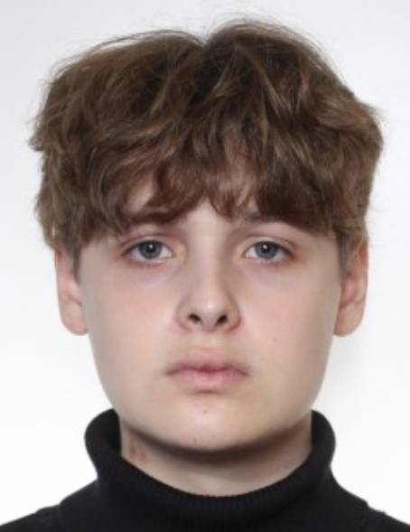

Чайка Максим Володимирович
Junior Web Developer
Мене звати Максим, я з дитинства захоплююся веб-розробкою. Як розробник-самоучка, я витратив незліченну кількість годин на вивчення різних мов програмування та технологій.
За ці роки я набув досвіду створення адаптивних i динамічних веб-сайтів за допомогою HTML, CSS i JavaScript. Я також працював із популярними інтерфейсними фреймворками, такими як React і AngularJS, для створення складних веб-додатків.
Досвід роботи
Працюю Front-End розробником в Київському Національному Торгово-Економічному Університеті.
Освіта
Бакалавр
Інженерія програмного забезпечення
Київський Національний Торгово-Економічний Університет
Київ, Україна
Курсы
Sololearn Introduction to HTML
Prometheus ОСНОВИ WEB UI РОЗРОБКИ 2022
Особисті дані
Адреса
Вул. Кіото 19. Київ, Україна
Номер телефону
+380635478177
Інтереси
Захоплюсь розробкою застосунків на ПК мовою програмування Python
Мови
JavaScript, C#, Python, C++
Мова розмітки
HTML, CSS